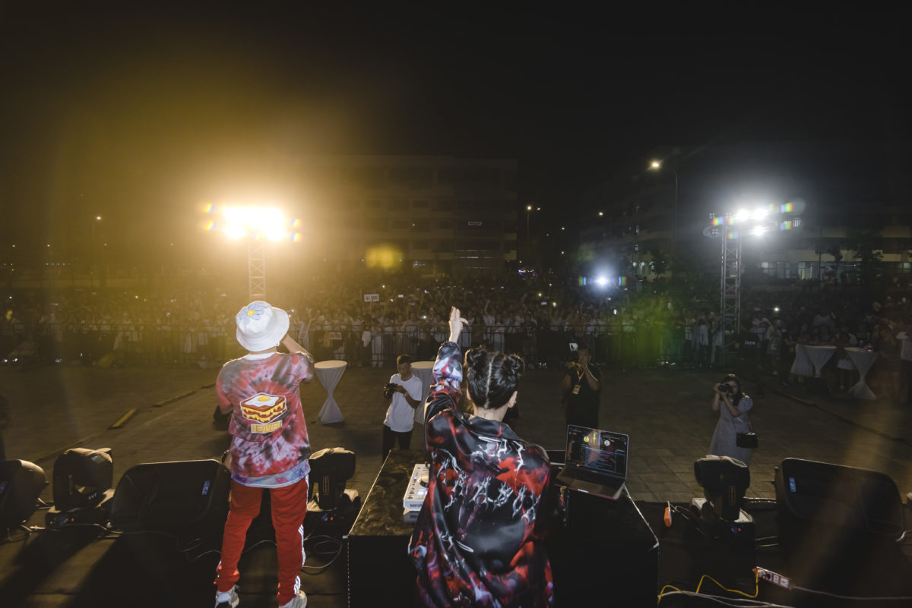

Volunteer
FUDA MUSIC SHOW 2020
FUDA MUSIC SHOW is a hearty music party for young people, where Indie, Pop, Rock, RnB, funky and EDM… all converge and shine. The interesting combination of musical colors brought a high-class and colorful music night. This is also a new and meaningful gift from FPTU to young people. Especially, accompanied by "Big Open Day - FUDA Music Show" with the participation of famous vocalists Orange, DJ Mie and famous bands such as: Brainwave Band, Ngọt Band. As a member of EVent Club, this time was when my skills of organizing an event show off.